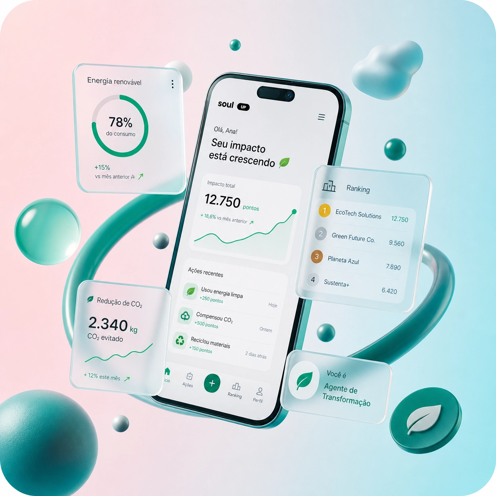
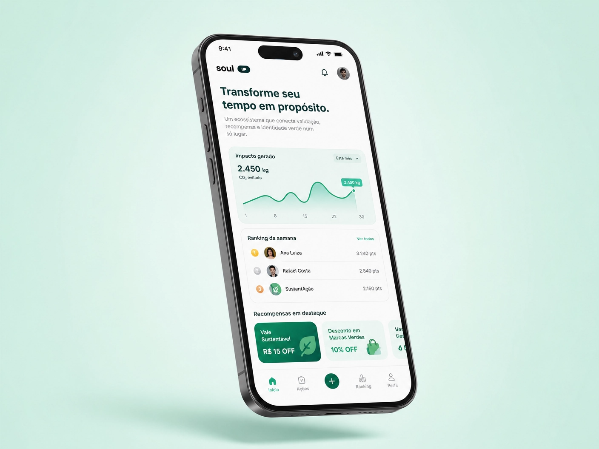

Sem visibilidade nem dado
Comunidades não enxergam o impacto coletivo das suas atitudes — não há medição, comparação ou recompensa pelo que é feito.
Transforme suas atitudes ecológicas em pontos, recompensas reais e impacto coletivo. Uma plataforma onde cada gesto verde conta — validado, ranqueado e recompensado.

Pessoas fazem ações ecológicas todos os dias, mas raramente são reconhecidas ou recompensadas. Sem incentivo, o engajamento cai e o impacto se dilui.
Comunidades não enxergam o impacto coletivo das suas atitudes — não há medição, comparação ou recompensa pelo que é feito.
Cada gesto sustentável é validado, pontuado de 0 a 100 e convertido em ranking e recompensas reais — incluindo conta de energia subsidiada.
Um ecossistema que conecta validação, recompensa e identidade verde num só lugar. Envie uma foto da sua ação, deixe o sistema validar e veja seu impacto crescer no ranking ao vivo.

Engajados no app no período
Entraram na rede em 2026
Interações na plataforma
Tempo médio 11min por sessão
Comece agora simulando uma ação sustentável e veja como funciona a validação automática da SoulUp.
Validar minha primeira ação